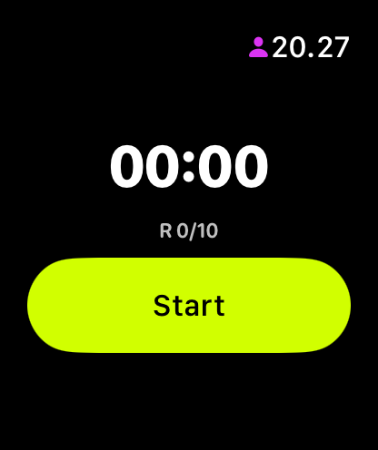
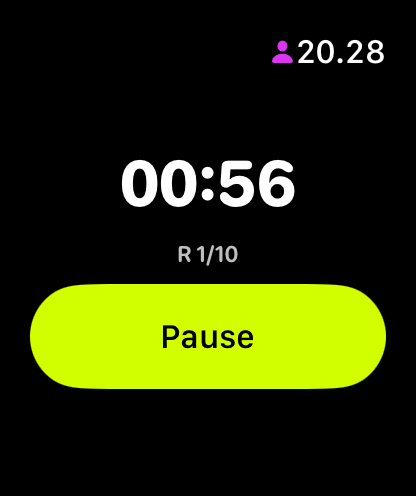

Your timer on your wrist
Apple Watch
Workout Timer
Start an EMOM or interval timer on iPhone and follow the countdown on Apple Watch — synced in real time via WatchConnectivity. Every round transition gives a haptic tap on your wrist so you know exactly when to switch. Standalone mode runs a simple 10-round EMOM when your iPhone isn't nearby. No account, no subscription.
Download on the App Store Watch app installs automatically with the iPhone app
Three states. One glance.
The Watch app shows exactly what you need: current round, remaining time, and a big Start/Pause button. Nothing else.


How it works
-
iPhone → Watch
Start a workout on iPhone and the Watch picks it up instantly via WatchConnectivity. Same round, same countdown, same state. Pause on iPhone, it pauses on Watch.
-
Standalone fallback
No iPhone nearby? The Watch runs a simple 10-round EMOM locally. For full configuration of rounds, intervals, and round length, start the workout on iPhone — the Watch follows automatically.
-
Haptic feedback
Feel every round transition on your wrist. Start cue, round changes, and a success tap when the workout finishes. Even in a loud gym, you always know where you are.
-
Apple Health
Completed workouts are saved to Apple Health as HIIT sessions (iPhone). Your Activity rings and Fitness app reflect every timed workout.
Built for the gym
Most timer apps on Apple Watch are afterthoughts. WODrounds was built for the Watch from day one, with the same timer engine as the iPhone app.
- Large numbers readable at a glance during a workout
- One-button Start/Pause — no fumbling mid-WOD
- Real-time sync means your phone can stay in the locker
- No account or login required on Watch
- Works independently without an iPhone nearby
Get WODrounds on your wrist
Download on iPhone. The Watch app installs automatically.
Download WODrounds Requires watchOS 10 or laterRelated
-
EMOM Timer →
Every Minute on the Minute. Set rounds and round length for CrossFit-style pacing.
-
Interval Timer →
Custom work and rest periods with any number of rounds. For HIIT, circuits and conditioning.
-
Beginner HIIT Workouts →
New to HIIT? 4 beginner-friendly workouts with simple settings you can start today.
-
Timer Guide →
Learn when to use EMOM vs. intervals vs. Tabata and how to set up each format.